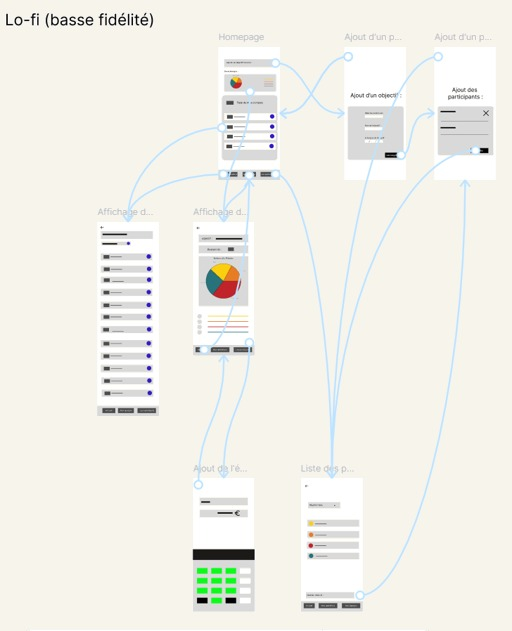
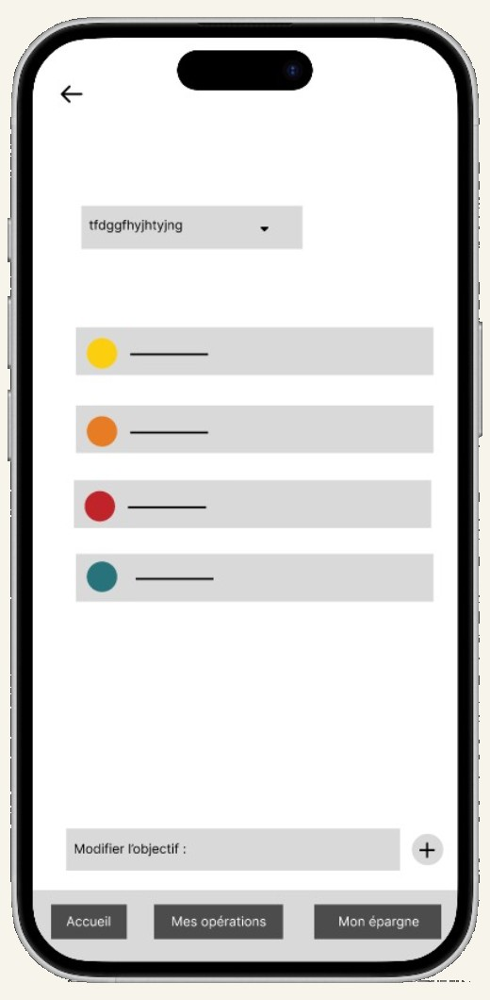
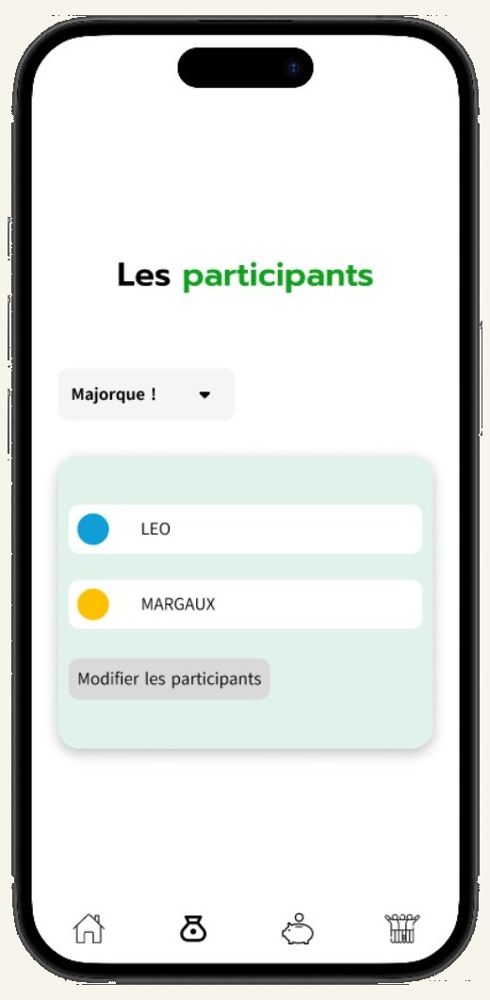
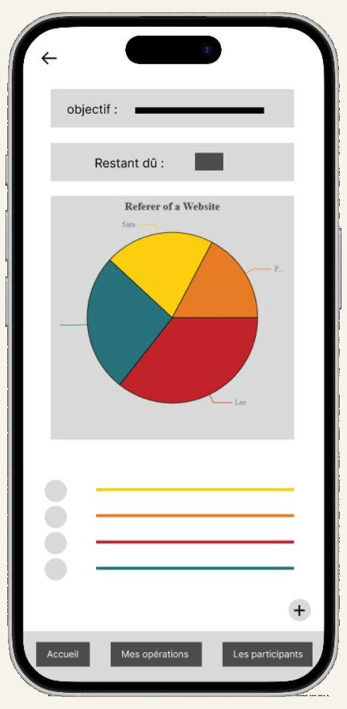
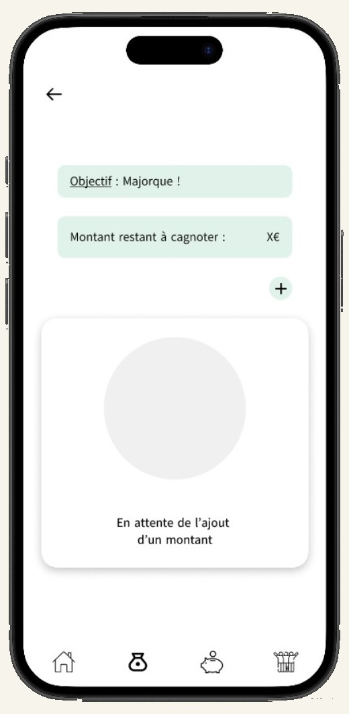
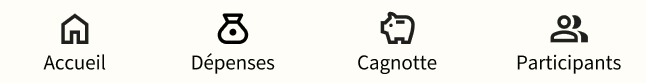

Quand la data devient un levier du design
Titulaire d'un master en data marketing, j'ai débuté ma carrière en tant que Data Analyst pendant un an chez Fortuneo, où j'ai développé une solide approche de l'analyse de données.
J'ai ensuite rejoint Fnac Darty en tant que Web Analyst pendant deux ans. J'y ai principalement travaillé sur l'analyse des comportements des utilisateurs sur le site Darty, en exploitant les données de tracking et des dashboards pour comprendre les parcours clients, identifier les points de friction et mettre en évidence des opportunités d'amélioration de l'expérience utilisateur.
Eparneo — étude de cas
Projet de formation · 2026Eparneo est un produit fictif conçu dans le cadre de la certification Google UX Design. Le projet ne repose ni sur des utilisateurs réels ni sur des indicateurs d'usage. Aucun chiffre de performance n'est présenté, faute de données existantes. L'objet de cette étude de cas est surtout de comprendre les différentes étapes du design : cadrage du problème, formulation des hypothèses, prototypage, test, itération.
Problématique
Concevoir une application et un site web réactif qui aident les groupes d'amis ou de familles à gérer le budget du ménage et à économiser en vue d'un objectif commun.
Périmètre et rôle
Projet fil rouge de la certification, mené sur quatre mois : la formation en encadre la progression étape par étape, chaque livrable étant produit par mes soins. Périmètre couvert : cadrage, personas, wireframes papier, prototype basse fidélité, tests d'utilisabilité, maquettes finales et amorce de design system.
Recherche et cadrage
La phase de recherche — deux personas construits par hypothèse, exploration de plusieurs wireframes papier pour poser l'architecture de l'information — est détaillée dans l'étude de cas complète, avec le raisonnement et les itérations associées.
Voir l'étude de cas complète (PDF) ↗01 — Prototype basse fidélité et tests
Deux tests d'utilisabilité ont été conduits sur un prototype connecté en basse fidélité, auprès de deux participants de mon entourage, sur trois tâches : créer un objectif, effectuer un versement, ajouter un participant au projet. L'échantillon est limité et non représentatif mais il a permis d'identifier un blocage récurrent.

Ouvrir le prototype lo-fi ↗02 — Itérations entre basse et haute fidélité
Six points de friction ont été relevés. Ils ont tous été corrigés.




03 — Maquettes finales
Un second test d'utilisabilité a été mené sur le prototype haute fidélité afin de confirmer cette version finale : les tâches précédemment bloquantes ont été réalisées sans hésitation, ce qui a validé les corrections apportées après le premier test.
04 — Composants et cohérence
Un design system a été formalisé afin d'assurer la cohérence des écrans : composants récurrents, couleurs de fond, couleurs de texte et échelle typographique.

Pour accompagner ma transition vers l'UX Design, j'ai suivi avec succès la certification Google UX Design, qui m'a permis d'acquérir une méthodologie complète centrée sur l'utilisateur : empathie, définition, idéation, prototypage et test.
En parallèle, j'ai souhaité confronter ces apprentissages à la réalité du métier. J'ai ainsi échangé avec une UX Researcher, Myriam Boukeraa, consultante, lors d'une visioconférence, afin de mieux comprendre son quotidien, ses méthodes de travail, les défis qu'elle rencontre et la manière dont la recherche utilisateur s'intègre dans les projets de conception.
Ces deux expériences ont renforcé ma conviction que l'analyse des données et la compréhension des utilisateurs sont complémentaires. Elles m'ont permis de construire une approche qui combine la rigueur analytique acquise en tant que Web Analyst avec les méthodes de conception centrées sur l'humain propres à l'UX Design.
Axes d'amélioration identifiés
Conduire cinq entretiens exploratoires avant toute production d'écrans ; recruter des participants extérieurs à mon entourage afin de limiter le biais de complaisance ; formuler les questions de recherche en amont des maquettes, selon la rigueur que j'appliquais déjà à l'analyse de données.
Henrri.com — refonte de la page d'accueil
Stage à distance · 1 semaineExercice interne confié par ma maître de stage : reprendre la page d'accueil d'un logiciel de facturation. Aucun client final, une contrainte de délai forte et un objectif unique — rendre la proposition de valeur compréhensible en dix secondes.
Audit de la page existante, restructuration de la hiérarchie de l'information, réduction de quatre appels à l'action concurrents à un seul, regroupement des sections selon les questions du visiteur, puis maquettes desktop et mobile.
Le format court impose de hiérarchiser rapidement et d'argumenter ses choix. J'ai appris à défendre trois décisions de conception face à une interlocutrice connaissant mieux le produit, et à intégrer un arbitrage défavorable.


Exercices en autodidacte — Figma
4 projets · pratique personnelleEn parallèle de la certification, je mène des exercices courts destinés à consolider ma maîtrise de Figma : construction de composants et de variantes, gestion des styles, auto-layout, prototypage interactif. Ces projets ne comportent pas de phase de recherche ; ils sont présentés comme des travaux de pratique et non comme des études de cas.
Exercice 01 — titre du projet
2026Objectif de l'exercice et écrans produits. À compléter : ce que j'ai cherché à travailler et la difficulté principale rencontrée.
Exercice 02 — titre du projet
2026Objectif de l'exercice et écrans produits. À compléter : ce que j'ai cherché à travailler et la difficulté principale rencontrée.
Exercice 03 — titre du projet
2026Objectif de l'exercice et écrans produits. À compléter : ce que j'ai cherché à travailler et la difficulté principale rencontrée.
Exercice 04 — titre du projet
2026Objectif de l'exercice et écrans produits. À compléter : ce que j'ai cherché à travailler et la difficulté principale rencontrée.
De l'analyse de données à la conception d'interfaces
J'ai toujours aimé la donnée et la compréhension des comportements clients : c'est ce qui m'a menée vers le web analytics, où j'ai passé plusieurs années à analyser les parcours utilisateurs et l'impact des décisions marketing. Cette expérience m'a appris la place centrale du client dans chaque arbitrage, et la rigueur qu'exige la mesure avant toute conclusion.
Je souhaite aujourd'hui passer du côté de la conception : dessiner les interfaces et mener les entretiens qui donnent corps à cette compréhension du parcours utilisateur, plutôt que de l'observer après coup — architecture de l'information, prototypage, design thinking. Je garde ma compétence data comme un outil au service du design : interpréter correctement les chiffres pour justifier mes choix de conception, et non pour les deviner.